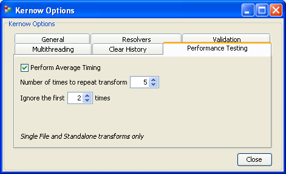

Kernow is available in English, French and German
What is Kernow?
Kernow is an open source tool designed to make it faster and easier to repeatedly run transforms using
Saxon.
It uses compiled stylesheets, multiple threads and caching resolvers to make the transforms run efficiently, and comboboxes that remember between runs to save your fingers having to retype paths. Kernow is runnable from Ant allowing it to slot into your build process, and its a high level API for Saxon making it very easy to run transforms from your own Java applications.
Downloading And Running Kernow
Kernow is hosted on SourceForge which can be difficult to navigate around the first time you use it. Clicking the link above opens the "Project page" for Kernow, click the green "Download Kernow" button on that page, then click "Download" next to the latest version of Kernow, and finally click "kernow.zip". Once downloaded and unzipped, for Windows users just double-click Kernow.exe or use the run.bat file. For non-Windows users, make sure all the Jar files in the lib folder are on the classpath, and then use the entry point: net.sf.kernow.GUI
Alternatively you can
run Kernow now using Java Web Start. This will install Kernow on your machine and add icons to your desktop and start menu. It will take a long time the first time you run it as the program downloads in the background, however from then on it will run from your machine and automatically update itself when I release new versions, which is cool.
What are Single File, Standalone and Directory transforms?
Single File transforms consist of an input XML file, an XSLT file, and optionally an output file. If no output file is specified all output is sent to Kernow's output window.
Standalone transforms don't have an input XML file, they are purely an XSLT 2.0 file with a specified initial template to start the processing at. Standlone transforms either don't need input, or manage the input within the transform (through doc(), document(), collection(), unparsed-text() etc). Again an optional an output file can be specified or all output is display in the output window.
Directory transforms consist of an input directory, an XSLT file and an output directory. Each input is transformed to an output file.
Kernow Options - enable the resolvers for best performance
Caching Entity and URI Resolvers, and the local cache
Directory transforms are really helped by caching entity resolvers - these store items that would otherwise be fetched for each transform of each input file. Kernow contains a caching entity resolver (useful when the XML contains DTD references), a caching URI resolver (useful for files referenced in the XSLT) and a "caching entity resolver for the Collection() function", which is an entity resolver used specificly by the collection() function. Each of these can be disabled in the options, but its unlikely you would ever want to.
The local cache facility allows you specify a place where the resolvers should look first. Typically a resolver will fetch a resource off the net and then store it in memory - to avoid that inital fetch store a copy of the resouce locally and then point Kernow at that.
If you don't want to see "The resolver has cached..." messages, then check the "suppress caching messages" checkbox.
Getting Schema Aware
To be able to run schema aware transforms you'll need to get a free trial license by using the Options -> Get Schema Aware menu and filling out the form on the Saxonica website. Then download Saxon-SA (Saxon Schema Aware version) and unzip it to your machine. Copy the Saxon-SA jars to the Kernow "lib" directory (specifically saxon8sa.jar and saxon8sa-jaxp.jar) and when you receive your license also put that in the lib directory. When you restart Kernow the title bar should tell you when Kernow is now "Schema Aware". If you still see "Basic" in the title bar, make sure the saxon8sa jars and saxon-license.lic are in Kernow's lib directory. If you aren't using the supplied Run.bat file, you will have to manually make sure the jar files *and* the directory containing the license file are all on the classpath. It sounds more complicated than it is. Any problems just email me.
Running Schema Aware transforms
If Kernow detects Saxon-SA and a valid saxon-license.lic it will automatically enable schema aware transforms. Schema Aware configuration can be done from the Schema Aware -> Configure Schema Aware menu. Here you can disable schema aware transforms (Kernow will use Saxon Basic instead), select the level of validation of source documents, and whether result validation errors are warnings (so you can see all the validation errors and not just the first - useful if you want to fix more than one at a time).
Set the input files should be processed and choose the output suffix
Setting input and output suffixes
Under the Options -> General tab you can set the output suffix used for directory transforms, and the allowed input suffixes. When you run a directory transform you supply input and output directories, and the XSLT file. Kernow will build a file list of all files in the input directory with suffixes that match one of the allowed input suffixes, optionally recursing from there down. This allows you to transform say, all .htm files (HTML files that are really well-formed XML) but ignore other files like .css, .gif etc.
Kernow transforms each input file to a primary output file of the same name, but with a suffix dependant on the following rules:
- If a suffix is supplied (and enabled) in the options that suffix is used. Useful if you want to have a proprietary extension.
- If a specific suffix is not supplied in the options, Kernow will use the following mappings based on the output method specified in the transform: "html" and "xhtml" become ".html", "text" becomes "txt" and anything else becomes ".xml".
- If no suffix is supplied in the options and no output method is used, it defaults to ".xml"
Set how many threads Kernow should use
Using multiple threads for directory transforms
Under the Options -> Multithreading tab you can set the number of threads to use for directory transforms. By default this is set to 1, which is effectively the same as running a single threaded application. If you are running Kernow on a multi-core or multi-processor system and have sufficient memory to run multiple threads, *and* the number and type of transforms involved outweighs the cost of creating the threads then you will benefit from using multiple threads. In other cases you may find increasing this number has a negative effect because the bottleneck is disk I/O, and using mutliple threads adds the extra overhead of thread creation and management.
It's best to experiment to find the right value that suits your system and the type of transform you're running.

The performance testing tab
Performance Testing
Under the Options -> Performance Testing tab you can tell Kernow to repeatedly run Single File or Standalone transforms and then display the average time for those runs. This is useful when you want to test the performance of a transform, as the first few runs can produce very different times as the JVM "warms up". When working out the average time across the runs, Kernow will ignore the first n runs specified here.
The defaults of 5 and 2 are probably ok for most needs - the first 2 times will be ignored with the average taken from the remaining 3.
You can set most of Saxon's command line options here
The Saxon Options dialog
The XQuery Sandbox with as-you-type syntax checking
Running XQuery from Kernow
XQuery support is limited in Kernow - you can run an individual .xqy or .xquery file in the Standalone tab (it will detect its an XQuery file from the extension) or you can just play in the XQuery Sandbox tab. This has basic syntax highlighting and performs syntax checking as you type.
Performing directory validation
Kernow can be used to validate directories of XML with W3C XML Schemas, using either Xerces, Saxon-SA or any JAXP schema processor. Select the directory to validate, select schema (click "check schema" to ensure the schema compiles) and then click run.
Using Saxon-SA for directory validation
Saxon's schema processor is much faster than Xerces and provides far superior errors messages, however its not free but not too expensive either. You can buy a schema processor only license (use the Schema Aware -> Get Schema Aware menu) which allows you use Saxon's schema processor but not run schema aware transforms. Make sure your license file and the Saxon-SA jars are in Kernow's lib folder and restart Kernow, then select Saxon in the Options -> Validation menu.
The Kernow API
Since 1.5 Kernow has an API which hides the complexities of running transforms. If you want to run a directory transform with a compiled stylesheet, caching resolvers and default options, you would use:
Kernow kernow = new Kernow();
kernow.runDirectoryTransform(inputDir, XSLT, outputDir, params);
See the javadoc for more information. Note: I'm planning on improving/finalising the API for 1.6 so its likely to change between now and then.
Running Kernow from Ant
Since 1.5 Kernow can be run from Ant. If you run a sequence of transforms then its useful to run them using Ant, rather than select the files involved from the comboboxes each time. Kernow comes with a sample buildfile which can be used as a boilerplate for chaining the transforms. If you want to run this process, or just an individual target in the process, then you can use the "Batch" tab in Kernow.
The Batch Tab
The batch tab is an experimental "Ant Runner" designed to make it easy to execute Ant targets in a buildfile. It will run any Ant buildfile, but its intended purpose is to selectively run targets in a buildfile that is normally used to run Kernow as part of a batch process.
The config file kernow.config
kernow.config is a Java XML properties file used to store all of the settings and paths in the comboboxes. When you close Kernow all of the settings are stored here, and reloaded the next time Kernow is run. You can tell Kernow where to look for the config file using the system property "kernow.config" for example -Dkernow.config=C:\kernow\kernow.config (look in Run.bat), or if thats omitted it will look for it on the classpath.
If Kernow can't find kernow.config, it will run with the default values (you can see what these are by running Kernow after deleting kernow.config). If you are running Kernow from Ant and want different settings to the default, make sure you specify the path to the config as a system property. Check the sample buildfile that comes with the download.
If you are using Kernow through its API, then set all of the configuration values through their setters, for example: Config.getConfig().setNovw(true); Or just set the system property and the settings will be loaded from there.
Memory issues - increasing the amount of memory available to Kernow
To increase the amount of memory available to Kernow, increase the "-Xmx256m" value in the Run.Bat file (for example -Xmx1024m to give the JVM 1GB).
Support and features requests
For basic support please use the mailing list or forum. For new features or advanced support please
email me.
Back to top